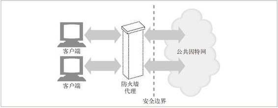
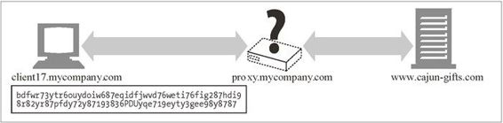

14.9 通过代理以隧道形式传输安全流量
客户端通常会用 Web 代理服务器（参见第 6 章）代表它们来访问 Web 服务器。比如，很多公司都会在公司网络和公共因特网的安全边界上放置一个代理（参见图 14-19）。代理是防火墙路由器唯一允许进行 HTTP 流量交换的设备，它可能会进行病毒检测或其他的内容控制工作。

图 14-19 公司防火墙代理
但只要客户端开始用服务器的公开密钥对发往服务器的数据进行加密，代理就再也不能读取 HTTP 首部了！代理不能读取 HTTP 首部，就无法知道应该将请求转向何处了（参见图 14-20）。

图 14-20 代理无法转发加密请求
为了使 HTTPS 与代理配合工作，要进行几处修改以告知代理连接到何处。一种常用的技术就是 HTTPS SSL 隧道协议。使用 HTTPS 隧道协议，客户端首先要告知代理，它想要连接的安全主机和端口。这是在开始加密之前，以明文形式告知的，所以代理可以理解这条信息。
HTTP 通过新的名为 CONNECT 的扩展方法来发送明文形式的端点信息。CONNECT 方法会告诉代理，打开一条到所期望主机和端口号的连接。这项工作完成之后，直接在客户端和服务器之间以隧道形式传输数据。CONNECT 方法就是一条单行的文本命令，它提供了由冒号分隔的安全原始服务器的主机名和端口号。host:port 后面跟着一个空格和 HTTP 版本字符串，再后面是 CRLF。接下来是零个或多个 HTTP 请求首部行，后面跟着一个空行。空行之后，如果建立连接的握手过程成功完成，就可以开始传输 SSL 数据了。下面是一个例子：
CONNECT home.netscape.com:443 HTTP/1.0
User-agent: Mozilla/1.1N
<raw SSL-encrypted data would follow here...>
在请求中的空行之后，客户端会等待来自代理的响应。代理会对请求进行评估，确保它是有效的，而且用户有权请求这样一条连接。如果一切正常，代理会建立一条到目标服务器的连接。如果成功，就向客户端发送一条 200 Connection Established 响应。
HTTP/1.0 200 Connection established
Proxy-agent: Netscape-Proxy/1.1
更多有关安全隧道和安全代理的信息，请回顾 8.5 节。